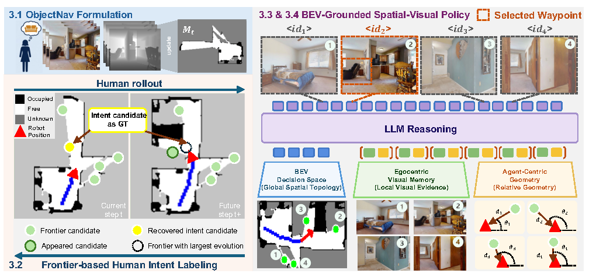
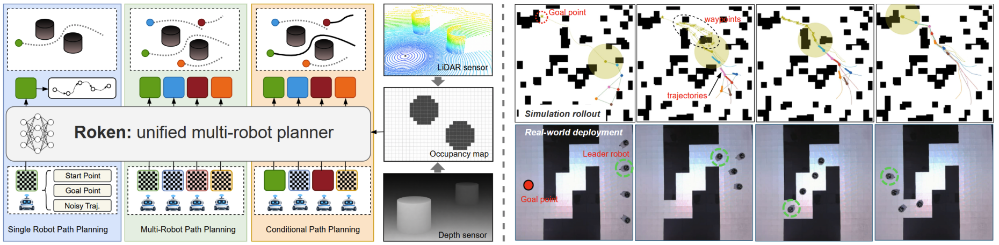
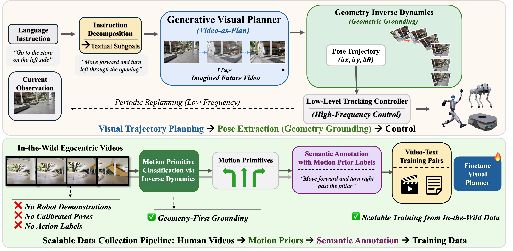
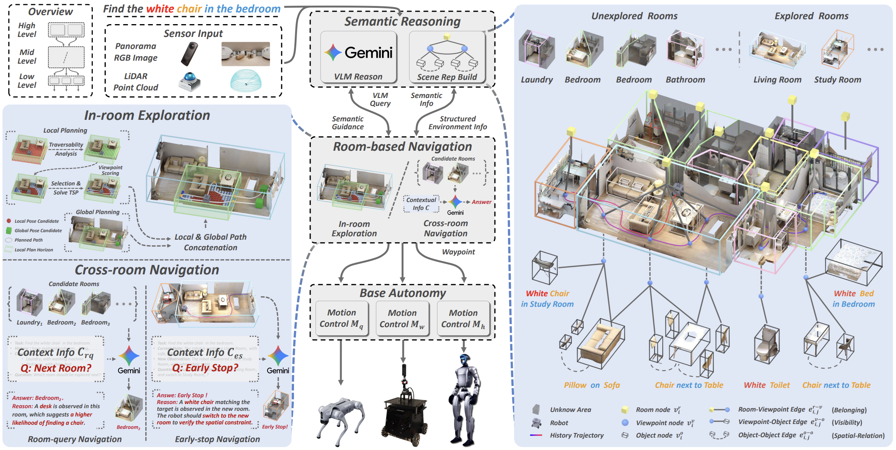
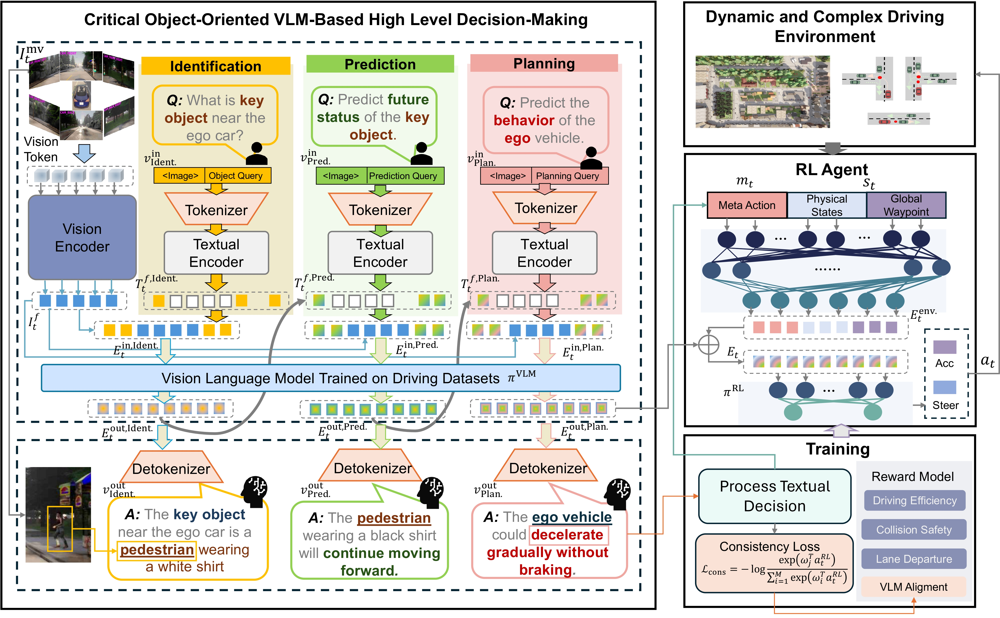
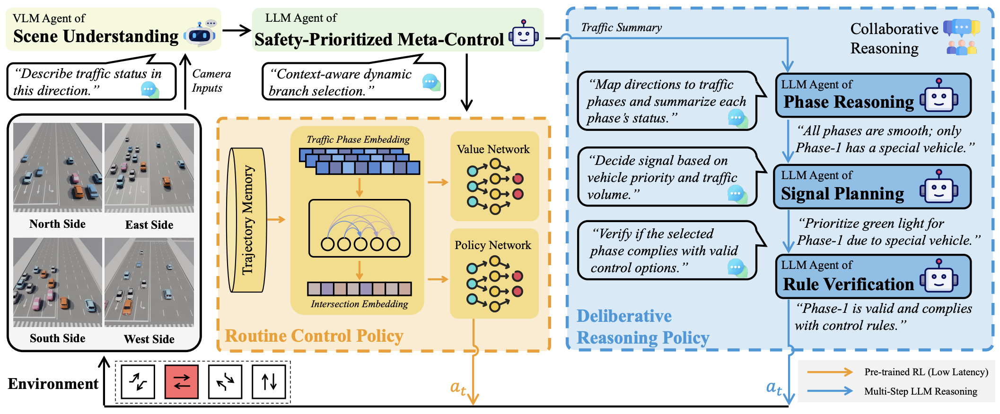

|
Yuxin Cai Hi there! I’m a Ph.D. student in the Automated Driving and Human-Machine System Lab (AutoMan) at Nanyang Technological University (NTU), where I’m advised by Prof. Chen Lv. I’m also an AGS scholar in the Robotics and Autonomous Systems department, co-supervised by Dr. Wei-Yun Yau at the Institute for Infocomm Research (I²R), A*STAR. Before starting my Ph.D., I completed my B.Eng. (Hons) in Mechanical Engineering at NTU, where I specialized in Robotics and Mechatronics. My research interests lie in robot learning, with an emphasis on generalization across diverse tasks and environments. I am particularly interested in how agents can acquire transferable and scalable policies that remain robust under distribution shifts, unseen task variations, and dynamic multi-agent settings. My recent work focuses on leveraging foundation models and structured reasoning to improve real-world robot navigation and decision-making, particularly in vision-language tasks and zero-shot generalization. |

|
News
2025.11 We won the Best Paper Award (First Prize) for our paper "COVLM-RL" at IEEE ITSC 2025!
|
Cool Demos |
Scalable Autonomy StackA full autonomy stack supporting both slow and fast walking/running modes across different robotic platforms. The system integrates real-time mapping, path planning, terrain analysis, and collision avoidance to enable smooth goal-directed navigation in real-world environments while maintaining stable forward motion during turns. This demo provides a practical platform for deploying and evaluating high-level vision-language navigation (VLN) policies on legged robots. More details can be found in here. |
||
|
Object Navigation — IntentNavIntentNav learns human-like ObjectNav policies from human demonstrations via spatial-visual imitation learning. The trained VLM policy transfers zero-shot across wheeled, quadruped (Go2), and humanoid (G1) robots without any additional fine-tuning, demonstrating strong embodiment-agnostic generalization. |
|||
|
Vision-Language Navigation — Goal2PixelGoal2Pixel reformulates VLN-CE as navigable pixel grounding, predicting a visible pixel in the image plane that is back-projected into a 3D waypoint for navigation. This pixel-based interface enables efficient long-horizon navigation with far fewer VLM inference calls than action-prediction baselines. |
||
|
Publications |
|
 |
IntentNav: Learning Spatial-Visual Object Navigation from Human Demonstrations
Yuxin Cai*, Zongtai Li*, Maonan Wang, Muyi Bao, Haokun Zhu, Ruofei Bai, Ding Zhao, Zirui Li, Wenshan Wang, Wei-Yun Yau, Ji Zhang, Chen Lv *Equal contribution Conference on Robot Learning (CoRL), 2026 IntentNav is a spatial-visual imitation framework that learns human-like ObjectNav policies from human demonstrations. It introduces Frontier-based Human-Intent Labeling to infer high-level search intent, constructs a spatial-visual candidate space combining BEV memory and egocentric visual memory, and trains a VLM policy with an Intent-Aligned Objective. IntentNav achieves state-of-the-art performance on MP3D, HM3D-v1 and HM3D-v2 benchmarks, and transfers zero-shot to wheeled, quadruped, and humanoid robots without VLM fine-tuning. |
|
|
Goal2Pixel: Grounding Goals to Pixels for Vision-Language Navigation
Muyi Bao*, Yuxin Cai*, Hang Xu, Zongtai Li, Jinxi He, Jingfan Tang, Chen Lv, Ji Zhang, Yaqi Xie, Wenshan Wang *Equal contribution Conference on Robot Learning (CoRL), 2026 Goal2Pixel reformulates VLN-CE as navigable pixel grounding, using the image plane as a unified spatial interface between VLM reasoning and robot motion. The model predicts a visible navigable pixel back-projected into a 3D waypoint, uses visibility-aware keyframe memory for long-horizon navigation, and introduces semantic embeddings with coordinate-aware auxiliary losses. It achieves 54.1% SR and 52.5% SPL on R2R-CE Val-Unseen with only 7.75 VLM calls per episode — 6× fewer than action prediction baselines. |
|
 |
Robots as Tokens: Unified Diffusion Transformer for Coordinated Multi-Robot Trajectory Generation
Ruofei Bai, Jie Chen, Yuxin Cai, Li Jun, Wei-Yun Yau, Lihua Xie Conference on Robot Learning (CoRL), 2026 Roken is a unified diffusion transformer that directly generates coordinated multi-robot trajectories satisfying both individual safety and global connectivity constraints. Each robot is represented as a discrete token that interacts via self-attention and cross-attends to map tokens. Auxiliary tasks based on Bayes' theorem — local occupancy reconstruction and long-horizon waypoint prediction — provide multi-scale supervision. Roken handles single-robot planning, multi-robot generation, and conditional generation in a single feed-forward model, and demonstrates strong scalability and generalization to unseen environments. |
|
 |
ImagiNav: Scalable Embodied Navigation via Generative Visual Prediction and Inverse Dynamics
Jie Chen, Yuxin Cai, Yizhuo Wang, Ruofei Bai, Yuhong Cao, Jun Li, Wei Yun Yau, Guillaume Sartoretti Enabling robots to navigate open-world environments via natural language is critical for general-purpose autonomy. ImagiNav introduces a modular hierarchy that decouples visual planning from robot actuation by combining instruction decomposition, generative future-video imagination, and inverse dynamics-based trajectory extraction. With a scalable in-the-wild video data pipeline, the method enables strong zero-shot transfer to robot navigation without robot demonstrations. |
|
 |
SysNav: Multi-Level Systematic Cooperation Enables Real-World, Cross-Embodiment Object Navigation
Haokun Zhu, Zongtai Li, Zihan Liu, Kevin Guo, Zhengzhi Lin, Yuxin Cai, Guofei Chen, Chen Lv, Wenshan Wang, Jean Oh, Ji Zhang SysNav formulates real-world ObjectNav as a system-level problem and introduces a three-level architecture that decouples semantic reasoning, navigation planning, and motion control for robust cross-embodiment deployment. The system is validated on wheeled, quadruped, and humanoid robots across 190 real-world experiments, showing substantial gains in success rate and efficiency, while also achieving state-of-the-art performance on four simulation benchmarks. |
|
 |
COVLM-RL: Critical Object-Oriented Reasoning for Autonomous Driving Using VLM-Guided Reinforcement Learning
Lin Li, Yuxin Cai, Jianwu Fang, Jianru Xue, Chen Lv IEEE 28th International Conference on Intelligent Transportation Systems (ITSC), 2025 (Best Paper Awards - First Prize) COVLM-RL integrates Critical Object reasoning with VLM-guided RL to generate semantic driving priors and align them with low-level control. It improves training stability, interpretability, and boosts CARLA success rates by 30% in trained and 50% in unseen environments. |
|
 |
VLMLight: Traffic Signal Control via Vision-Language Meta-Control and Dual-Branch Reasoning
Maonan Wang, Yirong Chen, Yuxin Cai, Chung Shue Chen, Yuheng Kan, Man-On Pun The Thirty-Ninth Annual Conference on Neural Information Processing Systems (NeurIPS), 2025 VLMLight is a vision-language-based traffic signal control (TSC) framework that leverages a safety-aware LLM meta-controller to dynamically switch between a fast RL policy and a structured reasoning branch. It introduces the first image-based traffic simulator with multi-view intersection perception, enabling real-time decision-making for both routine and critical scenarios. Experiments demonstrate up to 65% improvement in emergency vehicle response over RL-only systems. |

|
CL-CoTNav: Closed-Loop Hierarchical Chain-of-Thought for Zero-Shot Object-Goal Navigation with Vision-Language Models
Yuxin Cai, Xiangkun He, Maonan Wang, Hongliang Guo, Wei-Yun Yau, Chen Lv Workshop on Learned Robot Representations (RoboReps), RSS 2025 A vision-language model (VLM)-driven framework that integrates structured chain-of-thought reasoning and closed-loop feedback to enable zero-shot generalization in object navigation tasks. |

|
Transformer-based Multi-Agent Reinforcement Learning for Generalization of Heterogeneous Multi-Robot Cooperation
Yuxin Cai, Xiangkun He, Hongliang Guo, Wei-Yun Yau, Chen Lv IEEE/RSJ International Conference on Intelligent Robots and Systems (IROS), 2024 (Oral Presentation) We propose a novel transformer-based multi-agent reinforcement learning framework that enables generalizable and cooperative behavior among heterogeneous robot teams across diverse task settings. |

|
Interaction-Aware Hierarchical Representation of Multi-Vehicle Reinforcement Learning for Cooperative Control in Dense Mixed Traffic
Yuxin Cai, Zhengxuan Liu, Xiangkun He, Zhiqiang Zuo, Wei-Yun Yau, Chen Lv IEEE Intelligent Transportation Systems Conference (ITSC), 2024 (Oral Presentation) We introduce a hierarchical multi-agent reinforcement learning framework that models both inter-vehicle interactions and traffic-level dynamics to achieve robust and cooperative control for autonomous vehicles in dense, heterogeneous traffic scenarios. |

|
Context-Aware Driver Attention Estimation Using Multi-Hierarchy Saliency Fusion With Gaze Tracking
Zhongxu Hu, Yuxin Cai, Qinghua Li, Kui Su, Chen Lv IEEE Transactions on Intelligent Transportation Systems (T-ITS), 2024 We propose a context-aware driver attention estimation framework that fuses gaze tracking, saliency detection, and semantic scene understanding across multiple hierarchical levels to improve prediction accuracy in real-world driving scenarios. |
Academic Services |
Journal Reviewer
Conference Reviewer
|
Visitor Map |
|
Website template from Jon Barron, jonbarron.com. |